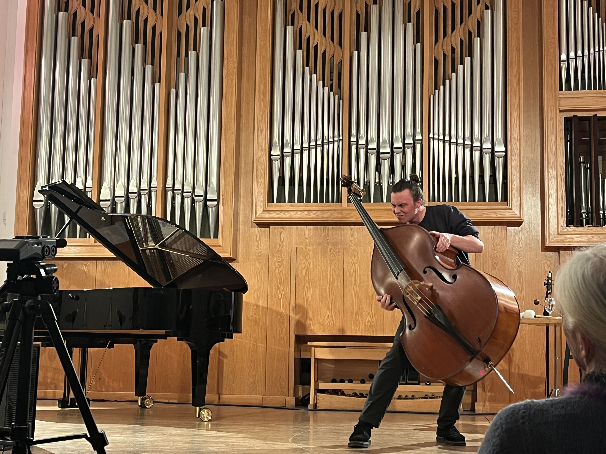

Compositions
Digital Resonance
A latex membrane stretches over an exposed 15-inch speaker mounted on a steel frame. Hands press into the latex skin while the sound from the speaker sets it vibrating. The hands become sensors that not only shape the digitally generated sound in space, but simultaneously perceive, analyse, and respond to it.
The single speaker radiates sound directed by the hands, the material, and the player-driven algorithms. Depending on the point of pressure, the membrane filters and refracts this radiation differently, according to the material and position of the hand. From this emerges a spatiality anchored in body position rather than a fixed placement in space.

Drei Oberton-Klaviere (6chan)
The basic idea behind "Three Overtone Pianos" is the connection of piano sounds with the overtone series. For this purpose, various concert grand pianos (Yamaha, Steinway, Fazioli) were sampled at multiple dynamic levels and then tuned to the overtone series of subcontra A. Using this basic material, different compositional techniques were applied across three movements to penetrate the timbre of the piano. The instrument is stripped of its roles as a harmonic, melodic, or rhythmic instrument, and sound itself becomes the central musical parameter.
The first movement centers on a playing technique impossible on the piano, namely a "glissando." The steps of the overtone series grow smaller and smaller in our perception the higher they go, and as one moves through them, an unbroken line emerges for the ear. Here, the spectrum and trajectories of the samples are zoomed into and out of, in order to break free from harmony and rhythm.
In the minimalist approach of the second movement, "27.5×25=909," we follow a single sound that reveals itself to be a composite of many. Unlike the many parallel processes of the first movement, here there is only one. A heartbeat of the overtone series repeats, again and again, a composite of many samples, giving rise to a blend of sound — a composed piano tone made up of countless individual sounds from three pianos. Following this inner structure, we discover that infinitely many processes are taking place within this single sound — combination tones, rhythms, movements, and interactions between the individual strands.
The final movement, "Fractals," uses stochastic methods to generate clouds of notes. Here the concert grands appear not as a blend but separately. An ever-denser structure reveals itself, again and again, as the starting point of the previous one seen from a new perspective. In this way, one zooms ever closer to the core of the timbre until finally seeming surrounded by it.
3x streichen, 1x zupppen
3x streichen 1x zuppen unfolds in four movements as a conversation between double bass and subwoofer. In the first three movements the bow is drawn; in the fourth and final movement, a single pluck sounds.
The foundation of the work is bass as the central frequency spectrum. Its timbre is shaped by the space: by the acoustic qualities of the double bass itself, and by resonant objects in the room — such as windows, chandeliers, or stage elements — that vibrate sympathetically and co-form the sound.
Through the movement of the double bass and subwoofer through the space, the sound is continuously expanded and integrated into its surroundings. The notion of the instrument shifts: no longer only the double bass and subwoofer on stage produce the sound — the entire room, with its resonating artefacts, becomes part of the instrument.

Is this Cairo? (9chan)
A composition that deals with David's overwhelming experience during his sound research in Cairo. Funded by Die Neue Liszt Stiftung, David stayed in Cairo for 15 days doing field recordings, talking to sound researchers and musicologists, and recording a traditional Sufi drummer. In the composition you hear two recordings: one mono field recording placed on every one of the eight speakers around you, and a drum loop derived from a session with Mohamed Abouzid Hussein. The only compositional method is volume automation, giving glimpses into a sonic world that was very unfamiliar to David — an invitation to explore and analyse these windows of sound.
Der Beständige Steinmetz
Everything changes, even stone — with the right amount of time and consistency, you can end up finding that which was already in the rough to begin with. These changes are predetermined: structures, material, and course can only be changed with patience, and are a constant part and companion of perception.
Die Kernkraft-Variation (8chan)
This composition was created after a one-month working stay at the Swiss nuclear power plant Leibstadt (KKL), where I had the opportunity to record places inaccessible to most people. From these recordings emerged "The Nuclear Power Variation," in which I engaged with the themes of form, spectrum, and energy. Virtually all the sounds heard originated from recordings made on-site, shaped through editing or left in their original state to produce the desired sonic quality.
Narcissus
A Faun's Dream
This imagination follows a warm Wednesday afternoon in Tuscany, the year the wheat did not fail.
A Faun lies next to a little creek and gives in to the warm, tiresome day. It is humid and hot; the eyelids are heavy, and the moss is soft and comfortable. The eyes are closing, and the mind begins to wander until it finds a point of departure into a dream.
Exploration Of An Aesthetic
Dreamspaces in acousmatic music follow their own narratives. Following footsteps deeper and deeper down the speaker could reveal what we find in ourselves — an endless amount of possible gestures, movements, spaces, ideas, and interpretations.